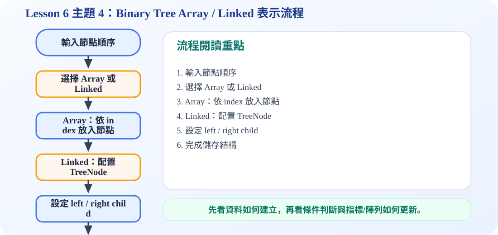

一、二元樹為什麼需要 Representation？
核心概念
我們在紙上畫二元樹時，看得到節點與線；但是電腦記憶體裡沒有真正的「線」。所以要把樹轉換成某種可儲存的形式，這就是 representation。投影片介紹兩種主要方式：array representation 與 linked representation。
Tree 圖形人看得懂
→
Representation轉成儲存方式
→
Memory電腦可操作
二、Array Representation 陣列表示法
Array representation 是把二元樹依照層級順序放進陣列。投影片通常讓 index 0 空著，從 index 1 開始放 root，這樣 parent 與 child 的位置可以用簡單公式計算。
位置公式
Parent：index i 的 parent 在 floor(i / 2)
Left child：index i 的左孩子在 2i
Right child：index i 的右孩子在 2i + 1
適合情況
Array representation 特別適合 complete binary tree 或 heap，因為節點排列很緊密，不需要存 left/right pointer。
互動：點選 index 看 parent / child 關係
0空
1A
2B
3C
4D
5E
6F
7G
點選 index 1–7，可以看到 parent、left child、right child 的位置公式。
三、Array Representation 的優點與缺點
優點：容易實作
因為 parent 和 child 都能用 index 算出來，所以不需要額外儲存指標。對 heap 這種 complete binary tree 很方便。
優點：存取規則固定
節點位置按照 level order 放入陣列，規則明確，適合快速找 parent 或 child。
缺點：不平衡時浪費空間
投影片 13 顯示，如果樹很歪或節點分布不連續，中間會出現很多空格，陣列中必須保留不存在的節點位置，造成記憶體浪費。
缺點：插入與刪除不一定方便
若不是 complete binary tree，節點位置可能跳很遠，插入與刪除時要維持位置關係，處理起來會較麻煩。
簡單判斷：如果樹很完整、很接近滿的形狀，用 array 通常很適合；如果樹很歪、很稀疏，用 array 可能浪費很多空間。
四、Linked Representation 連結表示法
Linked representation 是讓每個節點自己保存三個部分：data、left child pointer、right child pointer。投影片 14 的 node structure 就是這個觀念。
Data
節點資料
節點資料
Left child pointer
指向左孩子
指向左孩子
Right child pointer
指向右孩子
指向右孩子
如果某個節點沒有左孩子，left child pointer 就是空；如果沒有右孩子，right child pointer 就是空。這種方式不需要為不存在的節點保留陣列位置，因此很適合一般形狀、不規則或不平衡的二元樹。
Array 表示法
把節點按照 index 放進連續陣列，用公式找 parent / child。
1A2B3C4D5E
Linked 表示法
每個節點用指標連到自己的左孩子與右孩子，不需要連續記憶體。
A
→ B
→ C
B
→ D
→ E
C
NULL
→ F
五、動畫流程圖：選擇表示法
觀察樹形
接近完整 → Array
不平衡 → 避免浪費
使用 Linked
完成選擇
六、考試與理解重點
這一節最常考的是 array index 公式：parent(i)=floor(i/2)，left child=2i，right child=2i+1。另外也要能說明 array representation 為什麼在不平衡樹上會浪費空間，以及 linked representation 的節點為什麼需要 data、left child pointer、right child pointer 三個欄位。
可編輯 C 程式範例：含中文註解與線上編輯器
這一段提供可直接修改的 C 程式碼。可以按「複製程式」貼到線上編輯器執行，也可以下載 .c 檔案。
程式題目教學內容：Binary Tree Array Representation
一、程式題目講解
本題示範如何用陣列表示完整二元樹。學生需要理解 index 1 是 root，左孩子是 2*i，右孩子是 2*i+1。
二、完整程式碼
完整可執行程式碼已保留在上方「可編輯 C 程式範例：含中文註解與線上編輯器」區塊中，檔名為 lesson6_topic4_demo.c。該程式碼已加入中文註解，學生可以直接複製到 OnlineGDB、Programiz 或 OneCompiler 執行。
三、程式執行結果
index 1 = A, left child = B, right child = C
index 2 = B, left child = D, right child = E
index 3 = C, left child = F, right child = G
index 4 = D
index 5 = E
index 6 = F
index 7 = G輸出逐一列出 index 1 到 7 的資料與左右孩子。因為這是一棵完整二元樹，所以每個內部節點的左右孩子位置都能用固定公式找到。
四、程式流程圖與流程圖說明
本頁下方已保留原本的程式流程圖。閱讀流程圖時，可以依序掌握「初始化資料或節點 → 執行主要函式或判斷 → 輸出結果」的過程。先建立陣列資料 A 到 G，再從 index 1 開始逐一輸出節點內容；若節點有左孩子或右孩子，就依照 2*i 與 2*i+1 的公式印出。
五、重要函數與語法說明
陣列 indexing：用固定位置存放節點；for 迴圈：逐一走訪陣列；printf()：輸出每個節點與孩子關係。
六、整體說明
本題重點是陣列表示法的公式很簡單，但較適合完整或接近完整的二元樹；若樹很稀疏，會浪費空間。
程式流程圖：Binary Tree Array / Linked 表示流程
下圖是本主題對應的程式執行流程，適合搭配本頁 C 程式碼一起看。

主題 4 程式流程圖：Binary Tree Array / Linked 表示流程
流程講解
- Array 表示法適合 complete binary tree，因為 parent 與 child 可以用 index 推出。
- Linked 表示法適合一般 binary tree，每個節點保存 data、leftChild、rightChild。
- 程式會依照選擇的表示法建立資料結構。
- 最後透過輸出或走訪檢查每個節點連線是否正確。
這張流程圖把本頁程式的執行順序整理成一條清楚路徑。閱讀時先看輸入與資料如何建立，再看條件判斷、指標或陣列索引如何改變，最後用輸出結果確認程式邏輯是否正確。